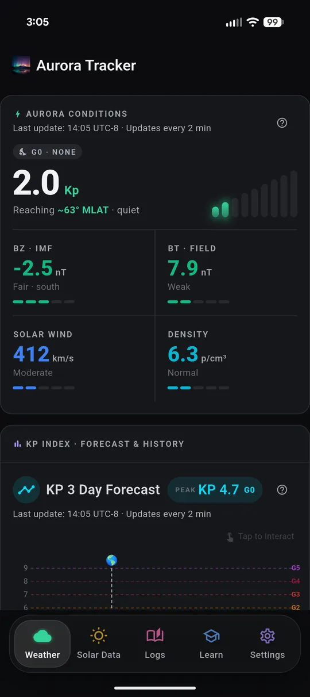
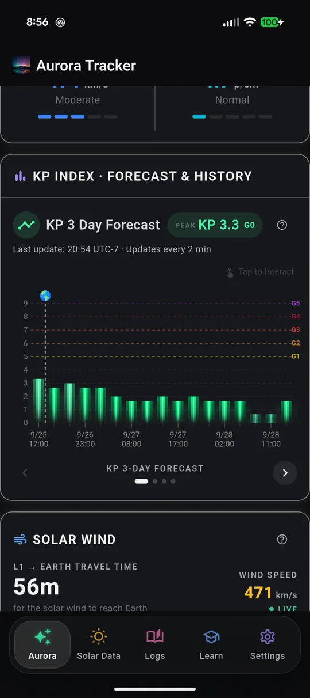
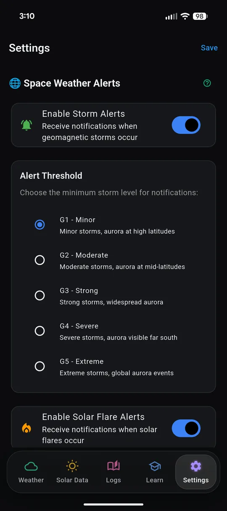
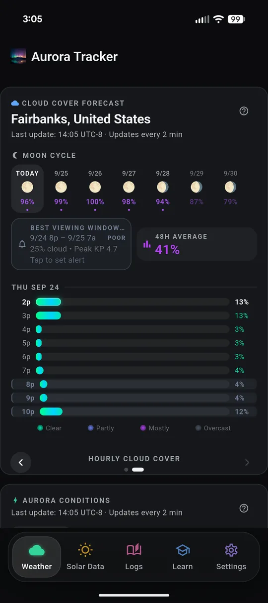
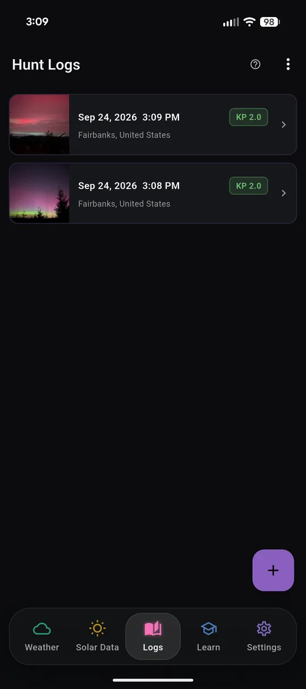

Everything you need on a storm night
The numbers that decide whether tonight is worth it, pulled from NOAA and NASA and refreshed every few minutes.
Live conditions
See the storm build in real time
Solar wind, Bz, Kp and Hp30, hemispheric power and aurora probability for your location, updated through the night.
- Kp 0–9
- Bz nT
- Wind km/s
- Hemi power GW

Forecasts
Plan the week, not just tonight
The Kp 3-day forecast, the 27-day outlook, Hp30 nowcasts and NOAA's OVATION map of where the oval sits tonight.
- 3-day Kp
- 27-day outlook
- Hp30 nowcast

Storm alerts
Get pinged at the level you care about
Notifications for geomagnetic storms, strong solar flares and incoming CMEs. Pick a threshold from G1 minor to G5 extreme, depending on how far south you are.
- G1 minor
- G3 strong
- G5 extreme
- X-class flares

Solar activity
Watch the Sun that starts it all
Sunspot regions, X-ray flares, CME forecasts, SDO imagery and NOAA's three-day outlook in one place, with a built-in guide to what every number means.
- Regions & spots
- WSA-Enlil CMEs
- SDO 131 · 193 · 304 Å
Aurora Tracker Pro
Should I go out tonight?
One-time purchase. No subscription.
- Should I Go? — tonight's go / no-go verdict
- Hourly cloud cover forecast
- Local weather and viewing quality score
- Hunt Log to record your sightings
- Local time across every chart
- No ads
Not sure yet? Watch a short ad in the app to try Should I Go?, local weather and the hourly cloud forecast for a limited time.


The next storm is already on its way
Install Aurora Tracker, set your alert level, and let the Sun tell you when to head out.
Get it onGoogle PlayEnglish · Deutsch · Norsk · Suomi · Svenska · Русский